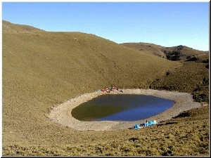
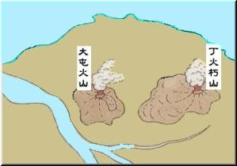
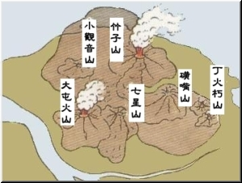
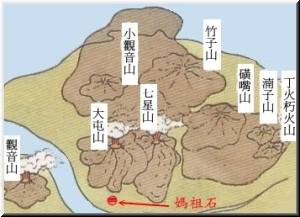
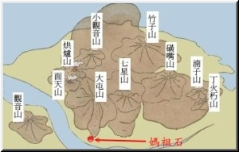

|
為了探討媽祖石是否為隕石的可能性，我們從《台灣空中文化藝術學苑第1期》裡找到隕石掉落地球的相關資料。地球被隕石撞擊成坑洞，會成為隕石坑積水成湖。位於台灣南部橫貫公路沿線的美麗高山湖泊—嘉明湖，經過經濟部中央地質調查所考察，證實為台灣首度發現的隕石撞擊湖泊，其生成年代約在數萬年到一萬年前。筆者陳肇夏說明：「證明隕石湖泊必須確定該地經過撞擊有隕石碎片、經高溫撞擊後使砂石熔成玻璃，在嘉明湖現地曾發現石英礦物碎屑物，且有黑、白、褐三色玻璃物質，而該地屬於變質岩地形，不可能是火山爆發造成，應可斷定該湖是隕石撞地球造成。」(頁58
) 而在媽祖石附近並沒有發現大的隕石洞與經高溫撞擊後使砂石熔成玻璃，可以證實媽祖石不是隕石。
|

嘉明湖，台灣高山上最漂亮的藍寶石
。(資料來源：http://www.latour.com.tw/cgi/Mwalker/MKViewJM.asp?irfnbr=233 |
|
說法二：
在《淡水學術研討會-過去‧現在‧未來論文集》裡紀榮達先生發表的『關渡宮的今昔』ㄧ文中提到：「近人指媽祖石為隕石，或有誤，巨大灰黑堅硬，明顯為安山岩質地。」（1998）就地理位置推測，媽祖石的形成應和鄰近的大屯火山群有關，於是我們也考察一下大屯火山群活動的歷史：
|
 |
|
二百八十萬年前至二百五十萬年前
丁火朽山、大屯山：
1.
丁火朽山噴發時，向四方投射出大量的火山噴發物，東邊直達今日的海岸。
2.
大屯山噴發時則力量較小，在今日的大磺嘴附近形成噴出口。
|
| 二百八十萬年前至二百五十萬年前 |
|  |
| 八十萬年前至六十萬年前 |
|  |
| 六十萬年前至五十萬年前 |
|
|  |
五十萬年前至三十五萬年前
（本資料參考來源：《台北地質之旅》遠流出版社 |
|
|
|
八十萬年前至六十萬年前
竹子山、丁火朽山、湳子山、七星山、小觀音山、紗帽山、大屯山：
１.
竹子山噴發的熔岩範圍非常廣大，北界抵達今日的富貴角。
２.
丁火朽山再度噴發，且在他的西北側湳子山也噴發而出。
３.
七星山和小觀音山僅是流出大量的熔岩，覆蓋了今日陽明山華崗一帶。同時也另外分出一支岩漿出口，形成了今日的紗帽山。
４. 另外在大屯山的南邊也噴發出一個缺口，熔岩由此流出形成今日的中正山。 |
|
六十萬年前至五十萬年前
七星山、大屯山 ：
１.
七星山再度大規模的噴發，噴出物覆蓋廣大的區域，南界抵達今仰德大道，西至竹子湖，東形成擎天崗。
２. 大屯山則進行了小規模的噴發，噴出物僅覆蓋南邊的山麓。
|
|
五十萬年前至三十五萬年前
烘爐山、面天山：
烘爐山及面天山噴發後，大屯山系完全靜止了活動。
|
|
（本資料參考來源：《台北地質之旅》
遠流出版社） |
|
「大屯火山群是台灣北火山岩區中分佈最廣的，大約由二百八十萬年發生爆發火山活動，最後一次爆發是距今二十萬年以前。」（《台灣空中文化藝術學苑第一期》頁37）「大屯山是大屯火山群第三高的山峰，海拔1081公尺，全部由岩構成。峰頂寬廣平坦，無噴火口，稜脈連接大屯南峰、大屯西峰，整個連峰看起來相當有帝王之尊，氣勢不凡。北側有一座菜公坑山，為大屯山的寄生火山。菜公坑山山頂有一座反經石，由於岩石中含有磁鐵礦，影響了所有近距離的磁場，因此，指北針到了這裡，也會偏轉，失去正確性，成為它的一大特色。」（內政部營建署陽明山國家公園管理處大屯山）其餘火山，「小觀音山外型如錐狀火山，具有大屯火山群中最大的火山口，火山體大致以角閃石兩輝安山岩之熔岩流而成，但夾有集塊岩或火山灰，所以造上屬於層狀火山。大屯火山活動、亦由拋出火山岩塊開始，集塊岩分佈至關渡附近，以後噴出角閃石安山岩與兩輝角閃石安山岩，後者主要分佈該火山體之西北部，而火山體北方之寄生火山菜公坑山卻以輝石安山岩為主
」。（《台北縣誌地理誌 》民國49年）
|
|
根據研究大屯火山群活動過程中發現，媽祖石是約在六十萬年前至五十萬年前大屯山火山活動爆發出的火山大型集塊岩，
最大的可能是媽祖石原先在大屯火山口附近，因火山爆發的力量將大石噴發到現在位置。在媽祖石上發現有許多的輝石角閃石斑晶，媽祖石應該是屬於輝石角閃石安山岩。特別的是，媽祖石也是一顆反經石，也會使指北針產生偏轉，但是偏轉的角度複雜，可以在未來深入研究。
|
 |
|
媽祖石附近的地質圖(中央地質研究所) |
|